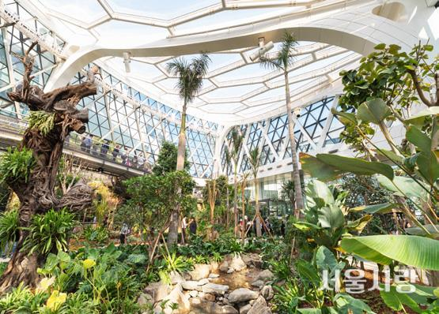

서울 식물원
지난 10월 11일 서울에 생긴 최초이자 최대 규모의 서울식물원이 임시 개장했 다. 면적은 50만4,000m²로 축구장 70개, 여의도공원의 2.2배 크기로
압도적 규모를 자랑한다. 서울식물원은 크게 열린숲, 주제원, 호수원, 습지원으로 구 성되어 있다. 이 중 주제원에 포함된 온실은 서울식물원의 랜드마크라
할 수 있다. 온실에는 바르셀로나, 로마 등 지중해와 하노이, 상파울루 등 열대기후 에 속하는 세계 12개 도시의 식물을 식재해 기후에 따른 독특한 식물
문화를 엿볼 수 있다. 또 2층에 설치한 스카이워크는 공중에서 온실 전체를 조망할 수 있어 관람객에게 사랑받는 곳 중 하나다.
강서구 마곡동로 161 | 02-120
관람시간 | 주제원 동절기 기준 오전 9시~오후 5시(매주 월요일 휴관)
서울숲 곤충식물원
서울에서 곤충과 식물을 동시에 만날 수 있는 유 일한 곳으로 테마식물원, 표본전시실, 나비생태 관으로 구성되어 있다. 또 장수풍뎅이, 사슴벌레 등 다양한
곤충을 보유하고 있어 관찰하는 재미 가 쏠쏠하다. 나비 유충이 서식할 수 있는 식초 식물, 형형색색 화려한 꽃을 자랑하는 원예식물 등 평소에 보기 어려운
신기한 식물과 다양한 곤 충을 볼 수 있는 자연 학습 공간이다. 자연 학습 체험 프로그램 이용 시에는 방문 전 예약 필수.
성동구 뚝섬로 273 | 02-460-2905
관람시간 | 오전 10시~오후 5시(매주 월요일 휴관)